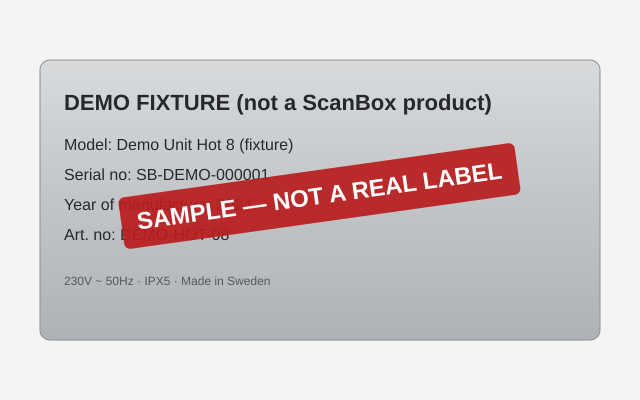

Describe the operation in plain language and get a grounded recommendation.
Toggle to see the same task through ScanBox's current spec-based filter — the contrast is the point.
Reproduction of the current buying journey: three technical facets, no guidance. The buyer must already know what fan heating or a GN 2/1 tray system is.
My quote
No units added yet.
ScanBox does not publish pricing — quotes are requested, never invented
Spare Parts Identification
Photograph the silver identification label on the box; the system reads model, serial
number and year, matches the unit and prepares the order request.
Label input
Sample input — not a real photo
We do not have a photo of a real ScanBox label, so this demo ships with a rendered
sample (the “SAMPLE” banner is baked into the image itself). Upload your own photo to replace it.

Vision extraction needs an API key (not configured) — enter the label fields manually instead:
Tender Specification Generator
Formal public-procurement text in four languages. Every technical value is looked up
from the dataset — never generated. Missing values say so, verbatim.
Technical Support Assistant
Answers come verbatim from the manual corpus with page-level citations. Questions the
corpus cannot answer get an explicit refusal and the real support contact — try it.